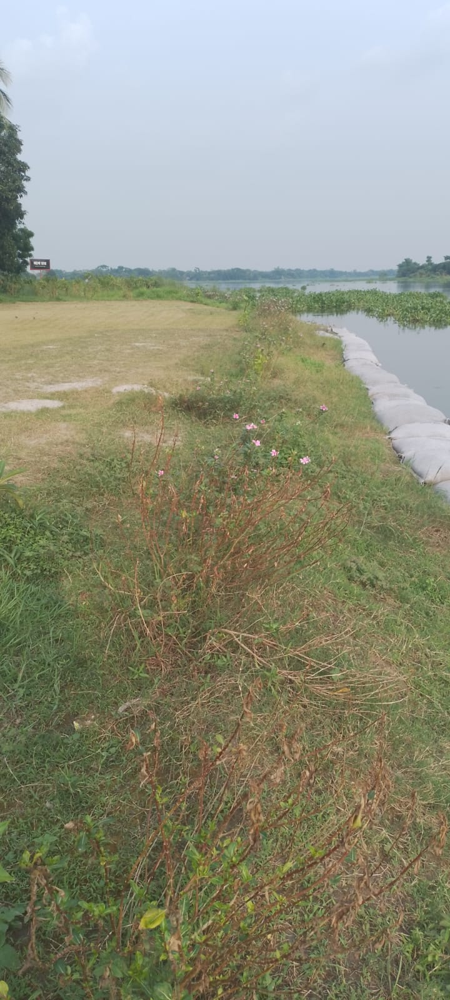
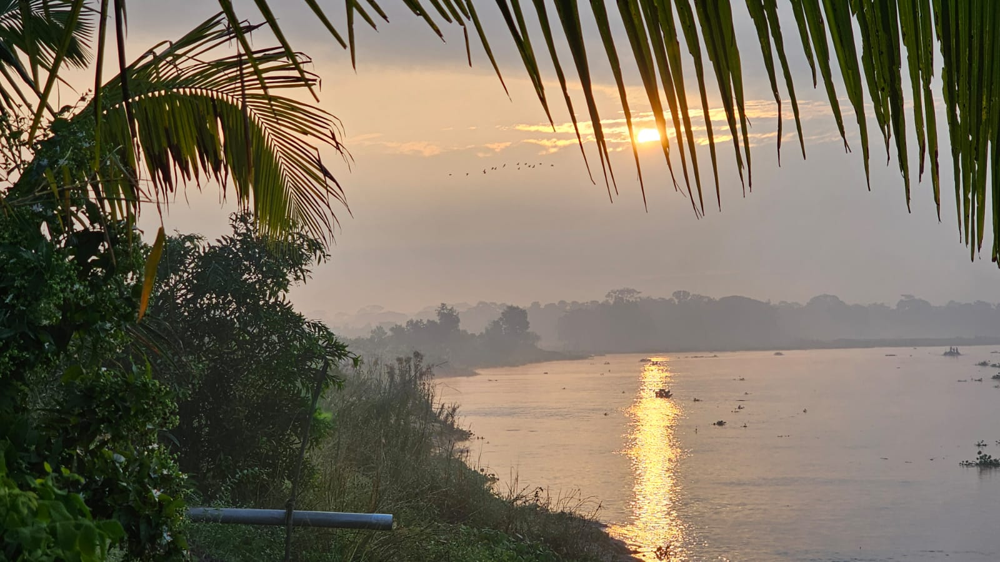
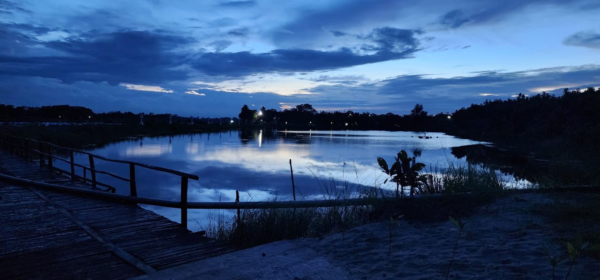
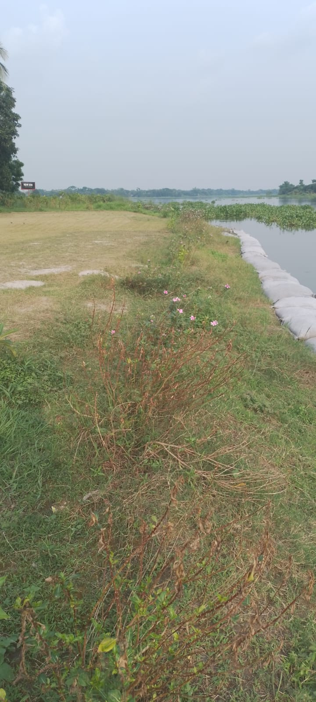
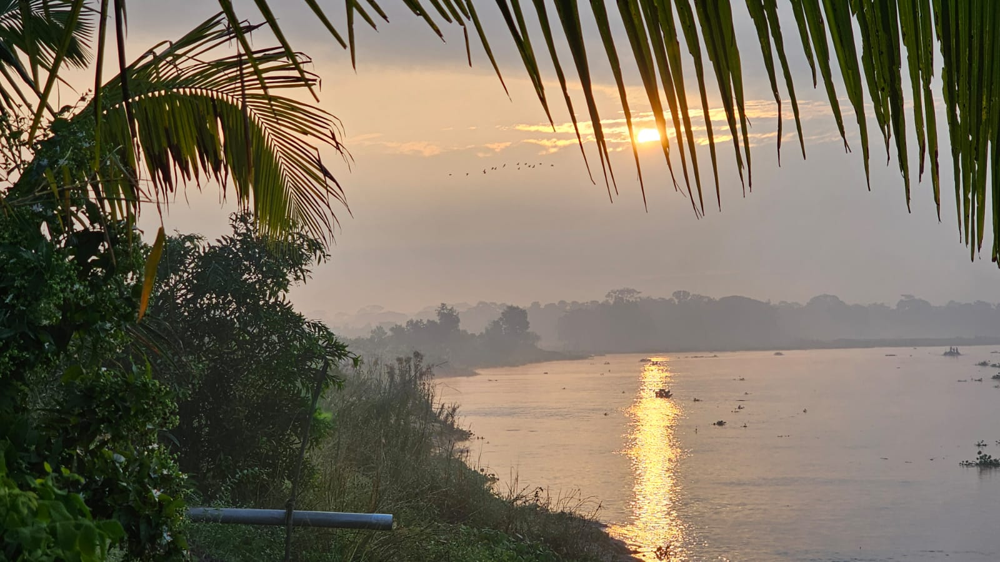
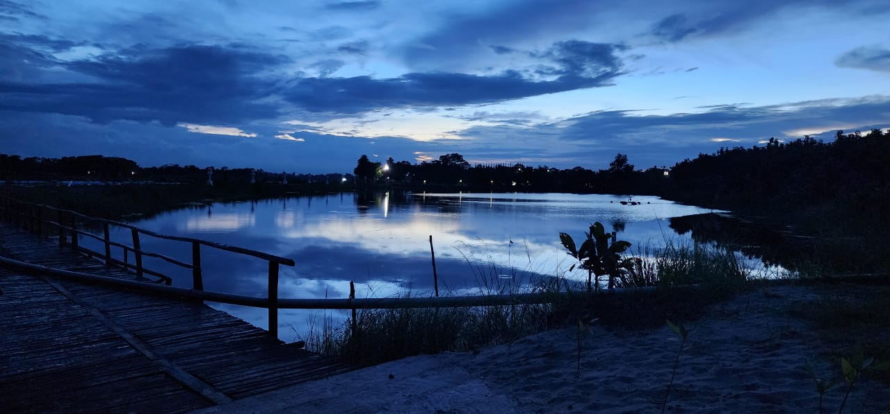

Guest Models & Doctrine
The strategic frameworks, pyramids, and fitness components shaping the Alo Chaya experience.
Hassan Choudhury Family & Heritage ▼
Heritage & Founding Narrative
Alo Chaya’s roots are woven into a rich family legacy spanning generations:
- MM House: Built by the founder in 1995, currently houses the Founder’s family.
- Mahmud Tower: Built on land of Fatima Mahal, originally established by the founder’s paternal grandmother and great grandfather.
- The Daroga Lineage: Founder’s paternal great grandfather, with 12 children, acquired Fatima Mahal land and established long-standing heritage practices.
- Abdul Rashid Chowdhury Family: Direct ancestral line contributing to estate management and cultural continuity.
Founder/Project Lead's Paternal Grandfather / Great Grandfather – builder of Fatima Mahal

Extended family of Abdul Rashid Chowdhury, including your father and uncles/aunts

The Daroga lineage: 12 children and their spouses

MM House, built by the founder, home to his family since 1995

Mahmud Tower built on historic Fatima Mahal land, blending legacy and modernity

Sajid Hassan, third son and project lead, ensuring quality and strategic vision at Alo Chaya
Guest & Family Stories
From the Daroga's 12 children to the founder's lineage, Alo Chaya preserves centuries of family heritage. Each photo tells a story of dedication, vision, and generational care:
- Daroga: Bought Fatima Mahal land, father of Abdul Rashid Chowdhuri with 12 children (6 sons, 6 daughters)
- Abdul Rashid Chowdhuri family: 5 daughters, 3 sons — foundation of the estate’s modern operations
- Founder: Built MM House in 1995, and Mahmud Tower where Fatima Mahal once stood
- Project Lead: Sajid Hassan, ensuring strategic, operational, and intellectual excellence across Alo Chaya
Psychological Architecture & Wellness
The Alo Chaya guest journey is designed to meet Packard’s 8 Hidden Needs: Emotional Security, Reassurance of Worth, Ego Gratification, Creative Outlets, Love Objects, Sense of Power, Sense of Roots, and Immortality. Our wellness programs (as per Big Five Aspects) integrate both physical and psychological care.
Staff are trained in postures and disciplines, ensuring sincere, ingenious service. The project leads and management team maintain accountability for each touchpoint, guaranteeing flawless execution.
Fitness Components
- Cardiovascular Conditioning
- Strength Training
- Flexibility & Mobility
- Balance & Coordination
- Recovery & Nutrition
Brand Personality (Jennifer Aaker)
- Sincerity: Genuine interactions and family-focused hospitality
- Competence: Flawless, reliable service
- Sophistication: Quiet luxury with cultural storytelling
- Excitement: Creative programs and events for enrichment
- Ruggedness: Connection to heritage and authenticity of the estate
Who We Are ▼
Introducing Alo Chaya, our vision, and core mission in hospitality and wellness.
- Family-owned resort with multi-generational stewardship
- Blend of modern luxury and cultural heritage
- Focused on holistic guest experiences: mind, body, and soul
Ownership & Leadership ▼
As the Project Lead, I oversee day-to-day operations, guest experiences, and strategic initiatives at Alo Chaya.
- Project Lead: Myself, Sajid Hassan — guiding the resort, wellness programs, and guest interactions
- Strategic Oversight: Our family council ensures long-term vision alignment and legacy preservation
- Accountability & Quality: I personally monitor and refine operations for continuous improvement across all resort services
Brand Equity Pyramid (Keller)
Our approach follows Keller’s four-step pyramid to create lasting guest relationships:
- Identity: Guests recognize Alo Chaya as a heritage, luxurious, serene escape.
- Meaning: Rich storytelling and flawless service create depth and value.
- Response: Positive feedback and trust built through consistent quality.
- Resonance: Guests become ambassadors and part of our family legacy.


The 7P Guest Promise
Each of the 7 Ps is carefully implemented to ensure guests receive an exceptional, consistent, and memorable experience:
- Product: 87 Bighas of riverine estate, 60,000 sq ft main facility, private lake, curated wellness programs.
- Price: Premium and transparent pricing reflecting exclusive value.
- Place: Easily accessible location 2.5 hours from Dhaka, secluded for privacy.
- Promotion: Authentic storytelling via social media, website, and guest events.
- People: Trained staff, project leads, and management accountable for every touchpoint.
- Process: Seamless check-in/out, personalized experiences, and consistent rituals.
- Physical Evidence: Heritage architecture, landscaped grounds, bespoke décor, and wellness infrastructure.
Videos of family suite and other key spaces showcase the guest experience:
Staff, Project Leads & Accountability
Each staff member, team, and project lead operates under a clear accountability framework:
- Project Lead (Sajid Hassan): Oversees entire guest experience, ensures heritage storytelling is maintained.
- Management Team: Implements policies, monitors quality, ensures operational consistency.
- Staff: Trained in postures (mindset) and disciplines (actions) to guarantee attentive, sincere, and skilled service.


15Ps of Strategy & HR
Alo Chaya integrates multiple strategic frameworks to align operations, HR, and guest experience:
- 5Ps of Strategic Implementation (Golden, Mildred Pryor, Leslie Toombs, et al): Planning, Policies, Programs, Procedures, Performance Metrics — all tailored to maximize guest satisfaction and operational efficiency.
- 5Ps of SHRM (Randall Schuler): People, Purpose, Processes, Performance, Place — ensures workforce is fully aligned to deliver the Alo Chaya promise.
- 3Ps of Mintzberg: Plan, Pattern, Position — used in CPM (Competency Performance Mapping) to benchmark our operations vs local and international resorts.
CPM Comparison shows Alo Chaya's superior performance in operational quality, staff engagement, and guest satisfaction versus competitors.

Alo Chaya Estate & River Views
The natural and architectural beauty of Alo Chaya complements the strategic and heritage frameworks:


 






Wellness Programs & Personal Development
Alo Chaya integrates guest intellectual and wellness development into the stay. Click to explore each resource:
- Big Five Aspects Personality Insights — track your personal growth and wellness alignment.
- Facebook Video: Lifestyle & Wellness Demonstration
- Sajid Hassan Publications on Amazon — learn the intellectual foundation behind Alo Chaya’s philosophy.
- Facebook Photo: Guest Experience Highlights
Photo & Video Gallery
Every visual reflects our commitment to curated, high-touch experiences. Videos showcase our rooms, views, and guest journey.

Overview of Alo Chaya's main riverine facility, showcasing space and heritage architecture.

Detailed architecture map highlighting layout and guest circulation.
Family Suite walkthrough showing room setup and amenities.
Alternate view of the Family Suite with detailed room layout.
Early morning sunrise over the river and estate gardens.
Fourth-floor guest areas and private corridors walkthrough.
Night view of Alo Chaya, emphasizing lighting and ambiance.
Third-floor room experience, highlighting spatial layout and furnishings.